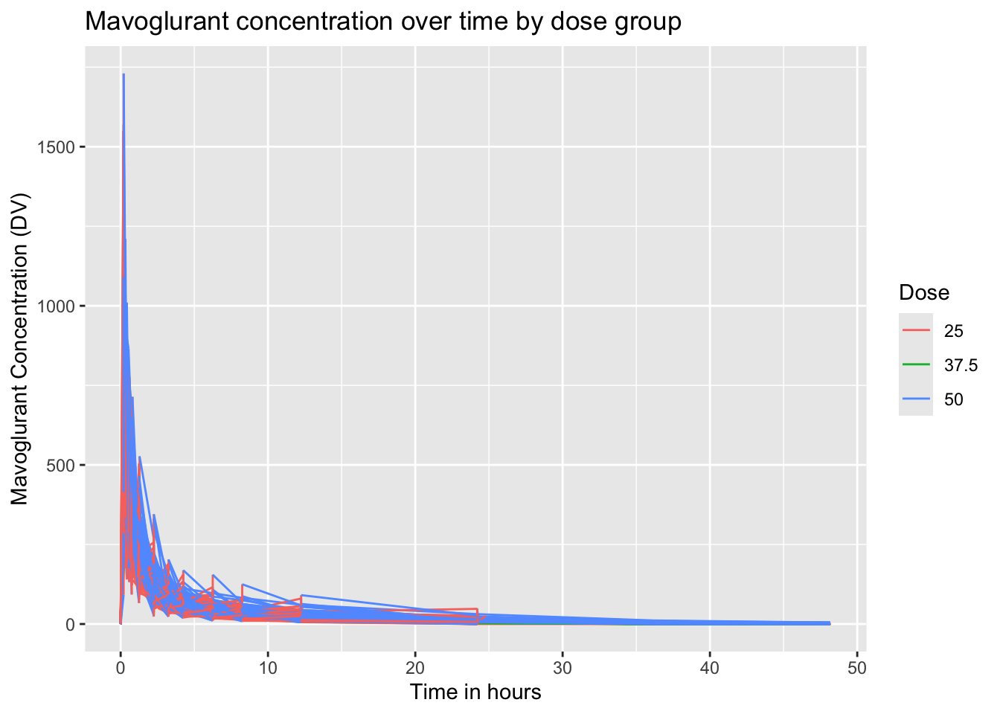
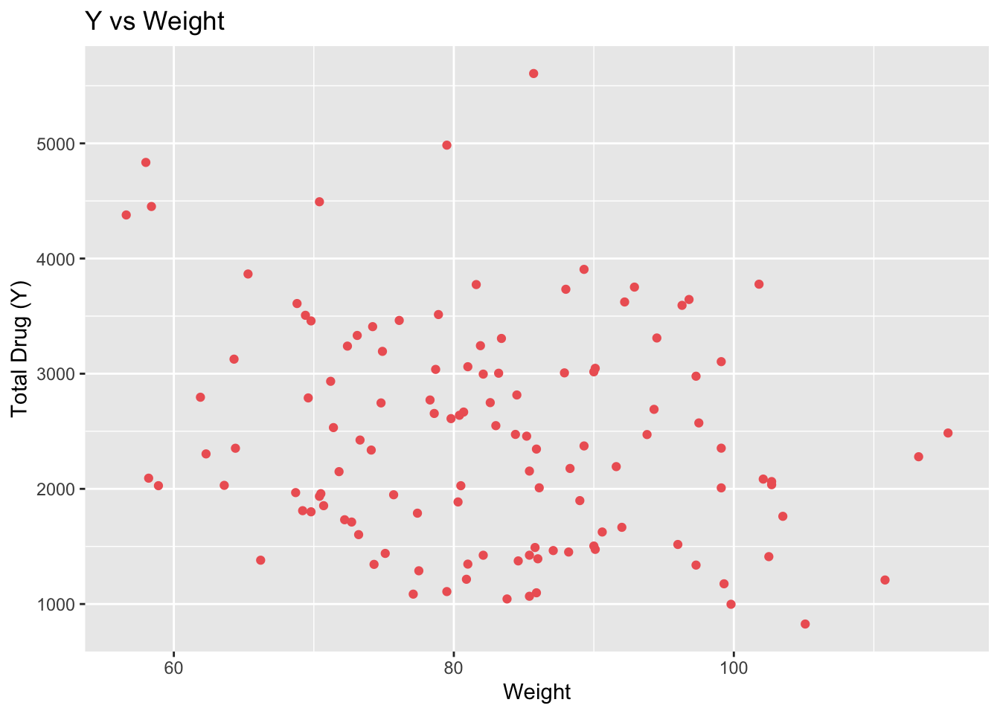
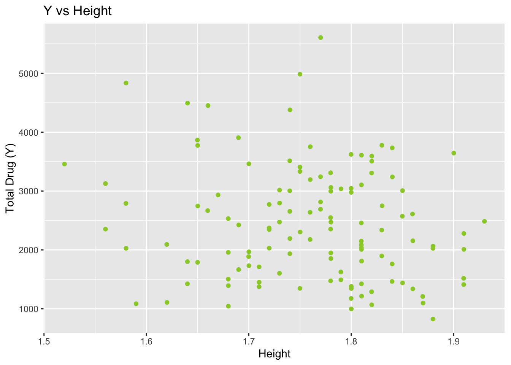
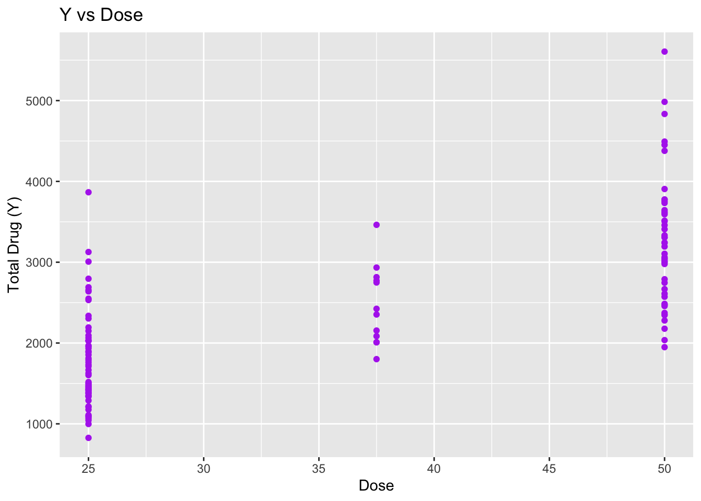

here() starts at /Users/annalisecramer/MADA/annalisecramer-MADA-portfolio-main/annalisecramer-MADA-portfolio
Load the data and explore variable names, then plot. Then write code to make a plot that shows a line for each individual, with DV on the y-axis and time on the x-axis. Stratify by dose (e.g., use a different color for each dose, or facets).
data <-read_csv(here("fitting-exercise", "data", "Mavoglurant_A2121_nmpk.csv"))
Rows: 2678 Columns: 17
── Column specification ────────────────────────────────────────────────────────
Delimiter: ","
dbl (17): ID, CMT, EVID, EVI2, MDV, DV, LNDV, AMT, TIME, DOSE, OCC, RATE, AG...
ℹ Use `spec()` to retrieve the full column specification for this data.
ℹ Specify the column types or set `show_col_types = FALSE` to quiet this message.
ggplot(data = data, aes(x = TIME, y = DV, color =factor(DOSE), group = ID)) +geom_line() +labs(title ="Mavoglurant concentration over time by dose group",x ="Time in hours",y ="Mavoglurant Concentration (DV)",color ="Dose")

Let us keep patients who only recived one dose.
data2 <- data %>%filter(OCC ==1)
Next, we will exclude observations with TIME=0, and compute the sum of each DV variable. We will select observations where time=0, too. Data3 combines sums of time \(\ne\) 0 observations and time = 0 observations.
data_no0 <- data2 %>%filter(TIME !=0) #get observations where time is not 0data_sum <- data_no0 %>%#from those non time=0, sum by dosegroup_by(ID) %>%summarize(Y =sum(DV, na.rm =TRUE)) %>%ungroup()data_with0 <- data2 %>%filter(TIME ==0)data3 <-left_join(data_sum, data_with0, by="ID")
Below is code that converts RACE and SEX to factor variables and keeps only certain variables that we want to work with: Y,DOSE,AGE,SEX,RACE,WT,HT
First, we’ll make a correlation plot, I used chatGPT to help with this. We can see most of these variables have weak correlations with each other, with the exception of Y/Dose and Weight/Height, both of which have moderately steong negative correlations.
corr_matrix <-cor(data4[sapply(data4, is.numeric)], use ="complete.obs")# Plot the correlation matrixcorrplot(corr_matrix, method ="circle", type ="upper", tl.col ="black", tl.srt =45, main ="Correlation Plot for data4")
We will next plot the distributions for our variables to check if they’re reasonable. I used chatGPT to help with this becuase I was having trouble getting the data into the right format (long).
I think most of these distributions look good. Dose shows a smallers group for the moderate dose, we will keep that in mind. Age shows a that people in their 30s are underrepresented, and perhaps those in their late 20s are overrepresented.
# Select numeric columns onlynumeric_data4 <- data4 %>%select(where(is.numeric))# Pivot data to long format for ggplotlong_data4 <-pivot_longer(numeric_data4, cols =everything(), names_to ="Variable", values_to ="Value")# Plot the distributionsggplot(long_data4, aes(x = Value)) +geom_histogram(bins =30, fill ="skyblue", color ="black", alpha =0.7) +facet_wrap(~ Variable, scales ="free") +labs(title ="Distributions of Numeric Variables in data4", x ="Value", y ="Count") +theme_minimal()
Now, let’s make some scatterplots and boxplots.
Notes:
Not much trend with Age or Weight
Height shows fewer individuals with low height/high dose
Dose doesn’t tell us much that we didn’t already knkow from previous figures
Interested to know what races 7 and 88 are, I don’t want to mess with them without access to a codebook– could be unknown, don’t know, NA, or multiple, some of those are valid answers
Sex has a few outliers but I am not going to remove them
#scatterplotsggplot(data4, aes(x = AGE, y = Y)) +geom_point(color ="dodgerblue2") +labs(title ="Y vs Age", x ="Age", y ="Total Drug (Y)")
ggplot(data4, aes(x = WT, y = Y)) +geom_point(color ="indianred2") +labs(title ="Y vs Weight", x ="Weight", y ="Total Drug (Y)")

ggplot(data4, aes(x = HT, y = Y)) +geom_point(color ="olivedrab3") +labs(title ="Y vs Height", x ="Height", y ="Total Drug (Y)")

ggplot(data4, aes(x = DOSE, y = Y)) +geom_point(color ="darkorchid2") +labs(title ="Y vs Dose", x ="Dose", y ="Total Drug (Y)")

#boxplotsggplot(data4, aes(x =factor(RACE), y = Y)) +geom_boxplot(fill ="hotpink2") +labs(title ="Y vs Race", x ="Race", y ="Total Drug (Y)")
ggplot(data4, aes(x =factor(SEX), y = Y)) +geom_boxplot(fill ="orange2") +labs(title ="Y vs Sex", x ="Sex", y ="Total Drug (Y)")
Next, a summary table with usefule summary statistics. ChatGPT helped with this.
Means and medians are pretty close for all categories– this tells me there’s no crazy outliers.